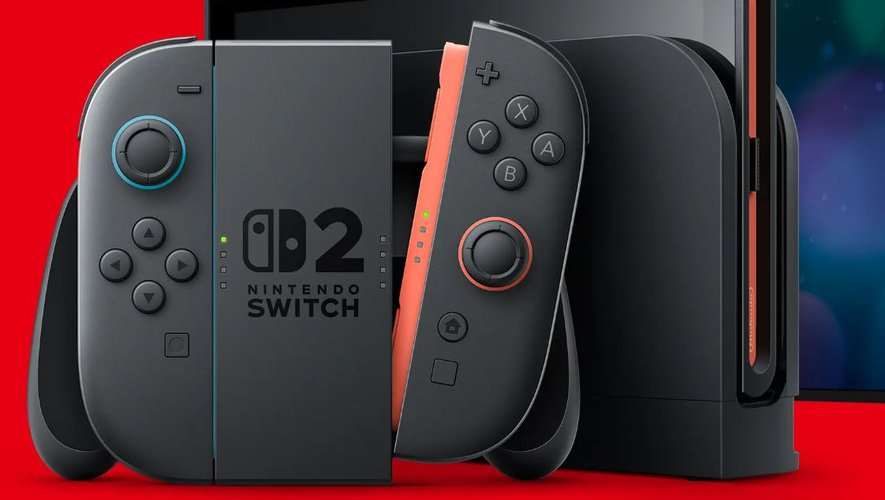

Title:
Summary: The Nintendo Switch 2 launched on June 5, 2025, as Nintendo’s first new console in eight years. Priced at $449.99 (or $499.99 bundled with Mario Kart World), it boasts a 7.9-inch 1080p screen, magnetic Joy-Cons, 4K TV output, and revolutionary social features. But is it a must-buy? This guide breaks down every spec, game, and hidden detail—plus tariff impacts and real-world advice.
1. The Big Launch: What’s in the Box?
2. Under the Hood: Tech Specs Decoded
3. Joy-Con 2 Revolution: Magnets, Mice, and Chat
4. Launch Games & Backward Compatibility
5. Social & Sharing: GameChat and Virtual Cards
6. Accessories Deep Dive: Must-Haves vs. Maybes
7. Tariffs, Pricing, and Stock Realities
8. Battery Life, Storage, and Real-World Use
9. Switch vs. Switch 2: Who Should Upgrade?
10. The Verdict: Nintendo’s Bold Bet
11. FAQs
12. Sources
The Switch 2 arrives with the console, two magnetically attaching Joy-Con 2 controllers, a dock with 4K HDMI output, a Joy-Con grip, wrist straps, and a USB-C charger. Unlike its predecessor, the Joy-Cons snap into place with satisfying magnets—no more wobbly slides or accidental detachments .
Midnight launches saw queues at Best Buy stores across the U.S., while Japan’s lottery system drew 2.2 million applicants for a chance to buy the console. Despite tariff anxieties (more on that later), Nintendo held firm on its $449.99 U.S. price after a pre-order delay to April 24 .
Let’s geek out:
Real-World Takeaway: This isn’t a PS5 killer, but it’s a massive leap from the Switch. Cyberpunk 2077 runs smoothly—a feat impossible on the original .
Nintendo fixed the biggest Joy-Con pain points:
Launch Titles (June 5):
Backward Compatibility: Most Switch games work, but some may lack optimization. Nintendo Switch Online + Expansion Pack adds GameCube classics like F-ZERO GX .
| Accessory | Price | Verdict |
| Pro Controller | $84.99 | Worth it for precision; adds C button |
| Camera | $54.99 | Only for GameChat enthusiasts |
| 256GB microSD Express | $59.99 | Essential; older Switch cards incompatible |
| Dock Set | $119.99 | Overpriced; skip unless multi-room setup needed |
The Switch 2 isn’t revolutionary—it’s a confident evolution. The social tools, mouse controls, and 4K dock address fan frustrations, while specs finally enable true third-party support. Yes, $450 stings, but for Mario/Kart/Zelda diehards, it’s a justified leap. Tariffs loom, but Nintendo’s 15-million-unit forecast hints at confidence.
Final Thought: Eight years later, Nintendo proves hybrid gaming isn’t a gimmick—it’s the future.
Q1: Can I use my old Joy-Cons?
A: No—they lack magnetic connectors and mouse sensors. Joy-Con 2 is taller with redesigned internals .
Q2: Is the screen OLED?
A: No—it’s a 7.9-inch LCD. But HDR and 120Hz refresh rate compensate .
Q3: How does backward compatibility work?
A: Insert Switch cartridges or redownload digital games. Some get free enhancements (e.g., Zelda); others run as-is .
Q4: Will tariffs force a price hike?
A: Possibly. Nintendo’s Doug Bowser called tariffs “a challenge,” but prices are stable for now .
Q5: Does GameChat require a subscription?
A: After March 31, 2026, yes—Nintendo Switch Online ($17.99/year) .
Q6: Can I share digital games remotely?
A: No—Virtual Game Cards require local networks and shared Nintendo accounts .
Q7: Is the dock sold separately?
A: Yes ($119.99), but it lacks the bundled dock’s fan. Ideal for secondary TVs .
1. Nintendo Official Pricing & Accessories
2. Forbes: Tariff Impact Analysis
4. Eurogamer: Tech Specs Deep Dive
5. CNBC: Sales Forecasts & Tariffs
7. Nintendo: Official Tech Specs
8. The Guardian: Hands-On Impressions
9. GamesRadar: Hardware Details
10. Engadget: Features & Pre-Order Chaos
Enjoyed this guide? Share your Switch 2 launch day stories below‚Äîor ask us anything! üëá
Aatiff.P@proton.me